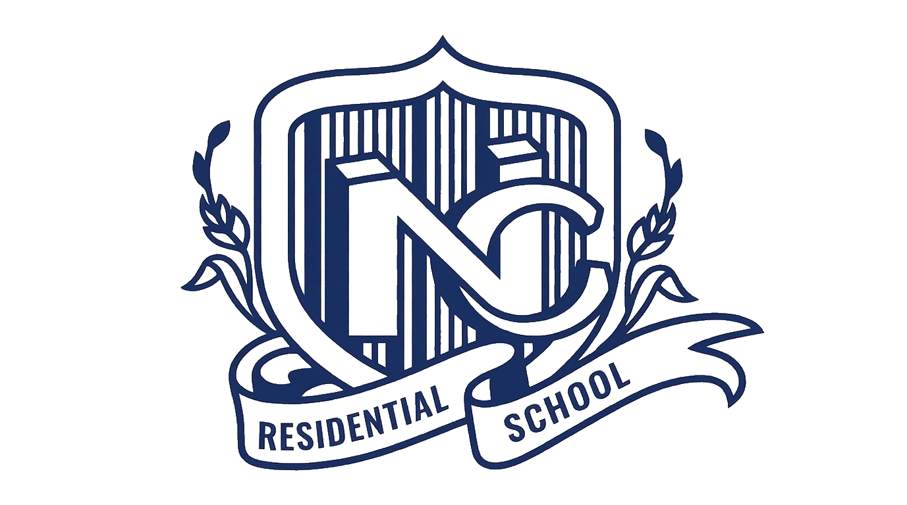

Educational Map — Ayush Kumar
From Birpur to Patna · 2008 — Present
Legend
⊙ Institution
─ ─ Journey Path
↑ Direction of Travel
─ ─ Journey Path
↑ Direction of Travel

New Cambridge School
2008–2014
Don Bosco Academy
2014–2019
Mithila Public School
2019–2021
Vibrant Academy
2021–2022
NIT Patna
2023–Present